Davis Group
Research in the group is organized around the programs summarized below. For each program we list the group members and collaborators involved and a selection of recent papers. A more complete list of publications is available in our ADS library.
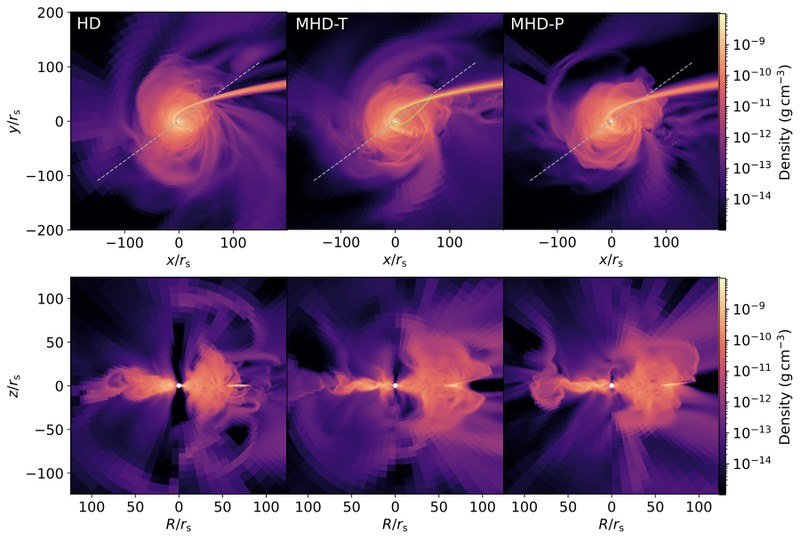
Density in the orbital plane (top) and a vertical slice (bottom) for hydrodynamic and MHD simulations of accretion flow formation after a tidal disruption event. From Meza et al. (2025).
When a star passes too close to a supermassive black hole, it is torn apart by tidal forces and much of its debris eventually returns to the black hole. We use the radiation magnetohydrodynamics capabilities of both Athena++ and AthenaK to follow the returning debris stream as it collides with itself, circularizes, and forms an accretion flow. These simulations allow us to predict the emission from tidal disruption events, from the earliest pre-peak emission through the evolution of the photosphere and the X-ray variability that accompanies disk formation, and to explore the role that magnetic fields play in the resulting accretion and outflows.
Group members: Maria Renee Meza, Xiaoshan Huang (former member)
Collaborators: Yan-Fei Jiang, Brenna Mockler, Sol Bin Yun
Recent papers:
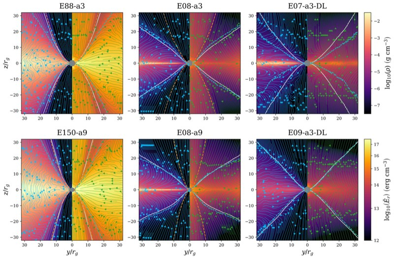
Gas density (left half of each panel) and radiation energy density (right half) for radiation GRMHD simulations of accretion onto stellar-mass black holes spanning a range of Eddington ratios and spins. From Zhang et al. (2025).
Black hole X-ray binaries are bright, nearby laboratories for studying accretion in strong gravity. Using the general relativistic radiation magnetohydrodynamics capabilities of the AthenaK code, which solves the radiation transfer equation directly rather than relying on approximate closures, we model accretion onto stellar-mass black holes across a wide range of accretion rates, from sub-Eddington through super-Eddington flows. These simulations address how the structure of the disk, the launching of winds and jets, and the radiative efficiency of the flow change with accretion rate and black hole spin.
Collaborators: Omer Blaes, Hua Feng, Jiahui Huang, Yan-Fei Jiang, Matthew Middleton, Patrick Mullen, Jim Stone, Chris White, Lizhong Zhang
Recent papers:
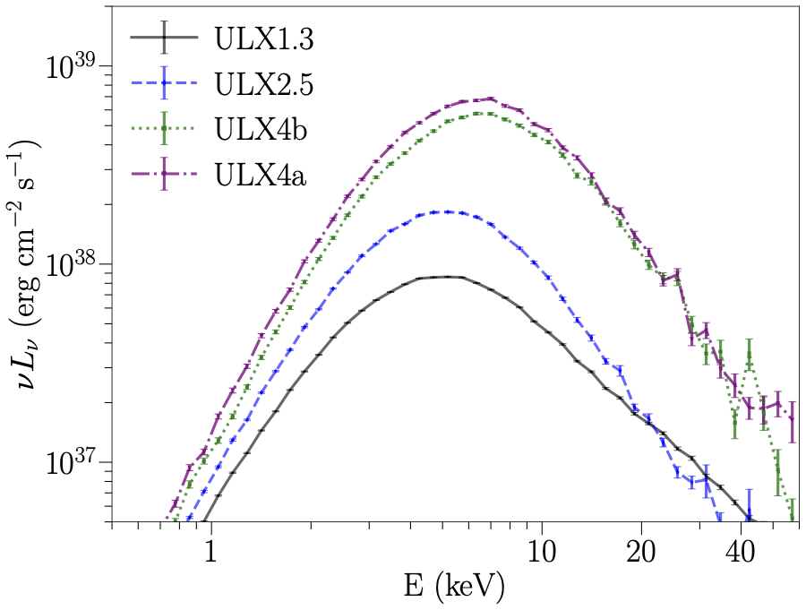
Synthetic X-ray spectra computed with Monte Carlo radiation transfer from radiation MHD simulations of super-Eddington accretion onto a stellar-mass black hole. From Mills et al. (2024).
Connecting simulations to observations requires computing the spectra and images that the simulated systems would actually produce. We post-process radiation magnetohydrodynamic simulations using the Monte Carlo radiation transfer module in Athena++ and general relativistic ray tracing with the Blacklight code to generate synthetic spectra and images of X-ray binaries, supermassive black hole binaries, and tidal disruption events. We also develop and test the accretion disk spectral models used to interpret observations, including the color corrections that account for spectral hardening in disk atmospheres and the contribution of emission from the plunging region inside the innermost stable circular orbit, and we apply these models to constrain the spins of accreting black holes.
Group members: Tegan Thomas, Bri Mills (former member), Julien Kearns (former undergraduate), Samer El-Abd (former undergraduate)
Collaborators: Dominic Chang, Andrew Fabian, Adam Ingram, Yan-Fei Jiang, Matthew Middleton, Andrew Mummery, Daniel Palumbo, E. S. Yorgancioglu
Recent papers:
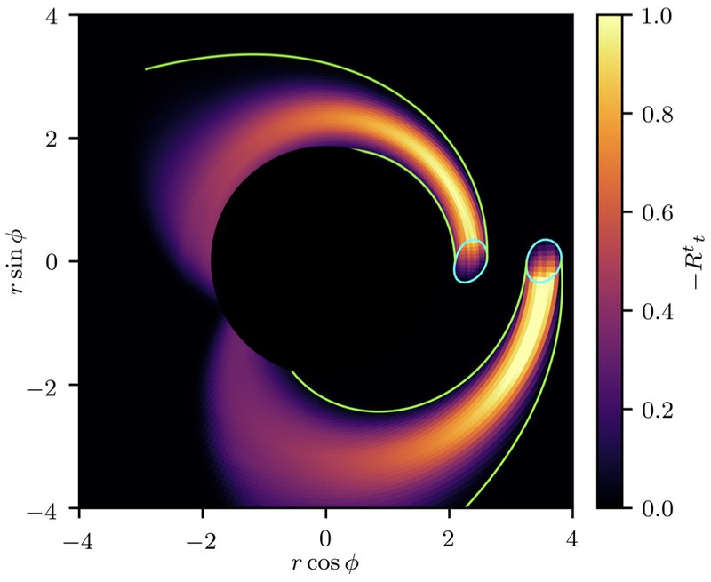
Two beams of radiation propagating around a spinning black hole, a test of the general relativistic radiation transfer scheme. The green curves show the expected null geodesics. From White et al. (2023).
Much of the group's research relies on numerical methods for coupling radiation transfer to the dynamics of gas and magnetic fields. We contribute to the development of these methods, including a general relativistic extension of the Athena++ radiation magnetohydrodynamics framework that solves the time-dependent transfer equation on a finite-solid-angle angular grid, a covariant formulation of radiative transfer in black hole spacetimes, and time-dependent radiation hydrodynamics on a moving mesh. These tools enable the simulations of black hole accretion, tidal disruption events, and outflows described on this page.
Collaborators: Philip Chang, Charles Gammie, Yan-Fei Jiang, Viktoriya Morozova, Patrick Mullen, Jim Stone, Chris White, Lizhong Zhang
Recent papers:
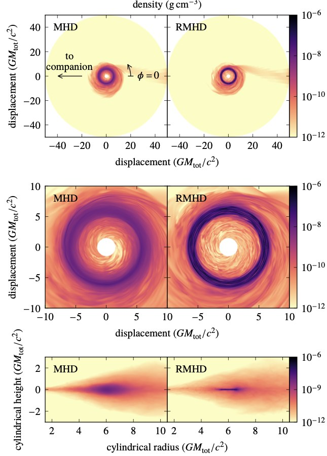
Density of the minidisk around one black hole in an equal-mass binary, comparing MHD and radiation MHD simulations. From Chan et al. (2025).
Pairs of supermassive black holes are expected to form after galaxies merge, and they are key targets for pulsar timing arrays and future space-based gravitational wave detectors. We perform radiation magnetohydrodynamic simulations of the circumbinary disks that surround these binaries and the minidisks that form around each black hole, for both equal-mass and unequal-mass systems. These calculations show how radiation alters the structure and thermodynamics of the gas, how accretion is shared between the two black holes, and what electromagnetic signatures might identify these systems.
Collaborators: Tamara Bogdanović, Edwin Chan, Simon Ferrel, Yan-Fei Jiang, Vishal Tiwari
Recent papers:
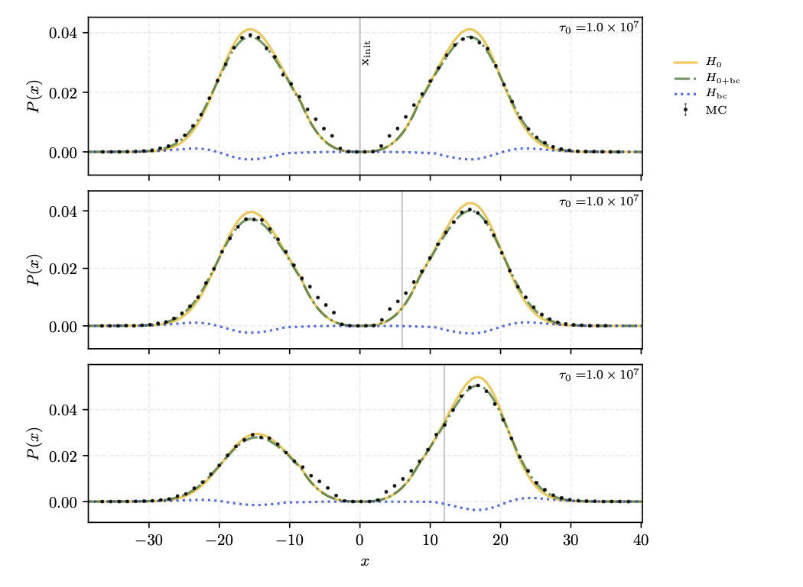
Binned Monte Carlo spectra compared with a semi-analytic solution (green curve) for resonant scattering in a sphere with a line center optical depth of 107. From McClellan et al. (2022).
Lyman α transit observations probe the extended, escaping upper atmospheres of planets irradiated by their host stars. Because Lyman α photons scatter many times before escaping optically thick gas, interpreting these observations requires accurate resonant scattering calculations. We have developed semi-analytic solutions for the escape of Lyman α photons from optically thick media that include a self-consistent treatment of the boundary conditions and agree well with Monte Carlo calculations. These solutions provide the basis for accelerated Monte Carlo methods for modeling Lyman α transfer in exoplanet atmospheres. We have also studied how refraction affects line and continuum light passing through exoplanet atmospheres during transit.
Group members: Connor McClellan (former member)
Collaborators: Jose Arita-Escalante, Phil Arras, Chase Funkhouser
Recent papers:
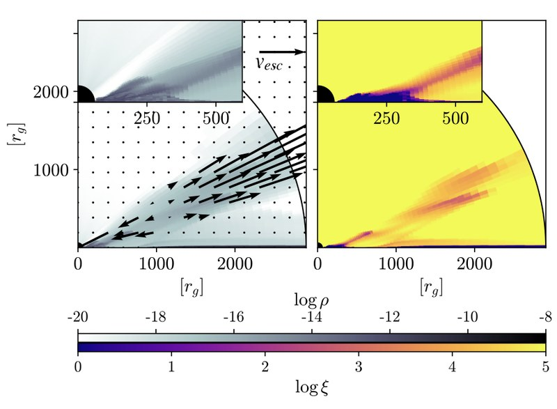
Density with velocity vectors (left) and ionization parameter (right) in a time-dependent simulation of a photoionized AGN disk wind. From Dyda et al. (2025).
Winds launched from accretion disks around supermassive black holes can carry away substantial mass and energy, and they are seen as blueshifted absorption lines in the spectra of many active galactic nuclei. We perform time-dependent simulations of line-driven disk winds in which the radiation force depends on the ionization state of the gas, including the effects of X-ray irradiation and photoionization from the central source. We also develop improved prescriptions for the line driving force, such as flux-averaged force multipliers, for use in these simulations.
Group members: Sergei Dyda (former member)
Collaborators: Randall Dannen, Tim Kallman, Daniel Proga
Recent papers:
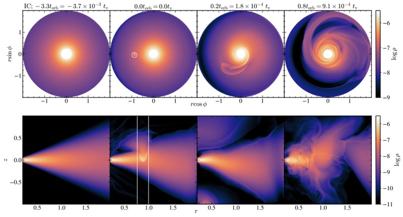
Density in the disk midplane (top) and a vertical slice (bottom) as a star or black hole embedded in an AGN disk perturbs the surrounding flow. From Dodd et al. (2025).
The accretion disks of active galactic nuclei can host stars and stellar-mass black holes, and their interactions with the disk may power some of the variable and transient phenomena seen in galactic nuclei. We simulate how embedded objects perturb AGN disks and explore the implications for changing-look AGN and quasi-periodic eruptions. We also study how gas disks around merging black hole binaries drain and evolve, and whether they could produce electromagnetic counterparts to gravitational wave sources detected by LIGO.
Group members: Xiaoshan Huang (former member)
Collaborators: Sierra Dodd, Enrico Ramirez-Ruiz, Sophie Lund Schrøder
Recent papers:
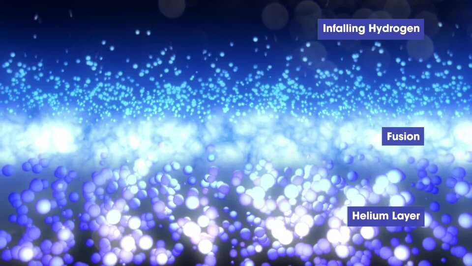
Illustration of accreted hydrogen fusing into helium on the surface of a neutron star, the fuel for thermonuclear X-ray bursts. Credit: NASA's Goddard Space Flight Center.
Thermonuclear X-ray bursts occur when material accreted onto the surface of a neutron star ignites in a runaway nuclear burning event. In the most energetic bursts, the luminosity reaches the Eddington limit and radiation pressure lifts the photosphere off the stellar surface. We combine MESA calculations of the burst evolution with radiation hydrodynamic simulations using Athena++ to follow the expansion of the photosphere and the accompanying mass loss. Results from this project are in preparation.
Group members: Connor McClellan (former member)
Collaborators: Ishaan Varshney, Nevin Weinberg
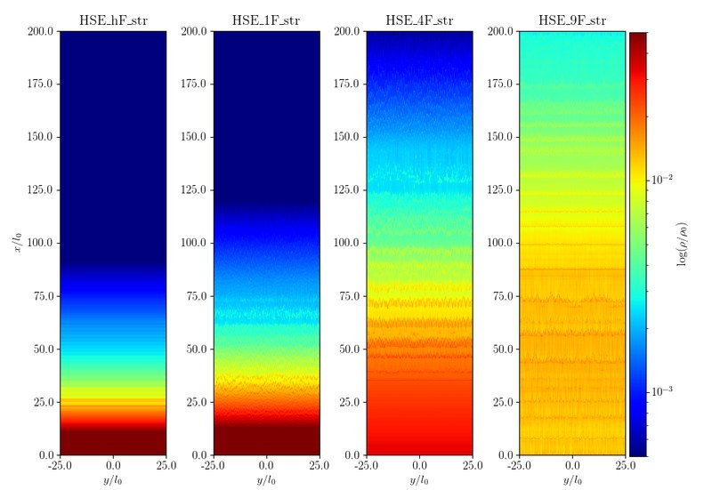
Gas density in simulations of an atmosphere subject to an increasing flux of cosmic rays (left to right). At high flux, cosmic ray pressure gradients drive an extended outflow. From Huang & Davis (2022).
Feedback from star formation regulates the growth of galaxies, in part by driving galactic winds. We study how cosmic rays and radiation pressure from young stars accelerate gas in star-forming environments. Our simulations show that a sufficiently large cosmic ray flux can launch outflows that restructure an initially hydrostatic atmosphere and that cosmic rays can drive the formation of multiphase gas through thermal instability. We have also used radiation hydrodynamic simulations to study how radiation pressure on dust accelerates clouds and drives dusty winds in rapidly star-forming galaxies.
Group members: Xiaoshan Huang (former member), Dong Zhang (former member)
Collaborators: Yan-Fei Jiang, Jim Stone
Recent papers:
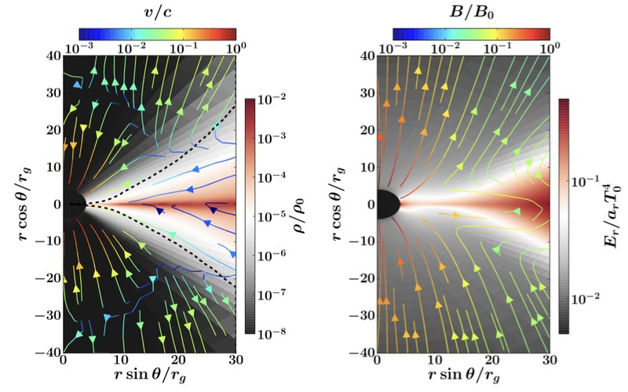
Density with velocity streamlines (left) and radiation energy density with magnetic field lines (right) in a global radiation MHD simulation of a sub-Eddington accretion disk around a supermassive black hole. From Jiang et al. (2019).
The accretion disks that power active galactic nuclei are dominated by radiation pressure over much of their extent, and standard analytic disk models predict that such disks should be thermally and viscously unstable. We perform global and local radiation magnetohydrodynamic simulations of accretion disks around supermassive black holes, at both sub-Eddington and super-Eddington accretion rates, to study their structure, stability, and emission. These simulations show that effects missing from standard models, such as the iron opacity bump and strong magnetic fields, can substantially change the stability and structure of AGN disks. We have also reviewed the broader landscape of magnetohydrodynamic simulations of AGN disks and jets.
Collaborators: Omer Blaes, Yan-Fei Jiang, Jim Stone, Alexander Tchekhovskoy
Recent papers: